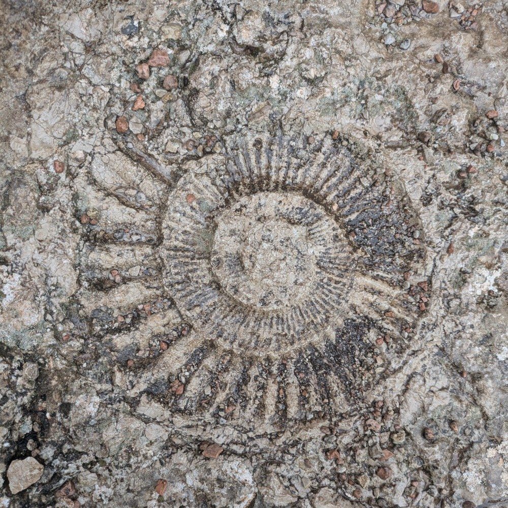
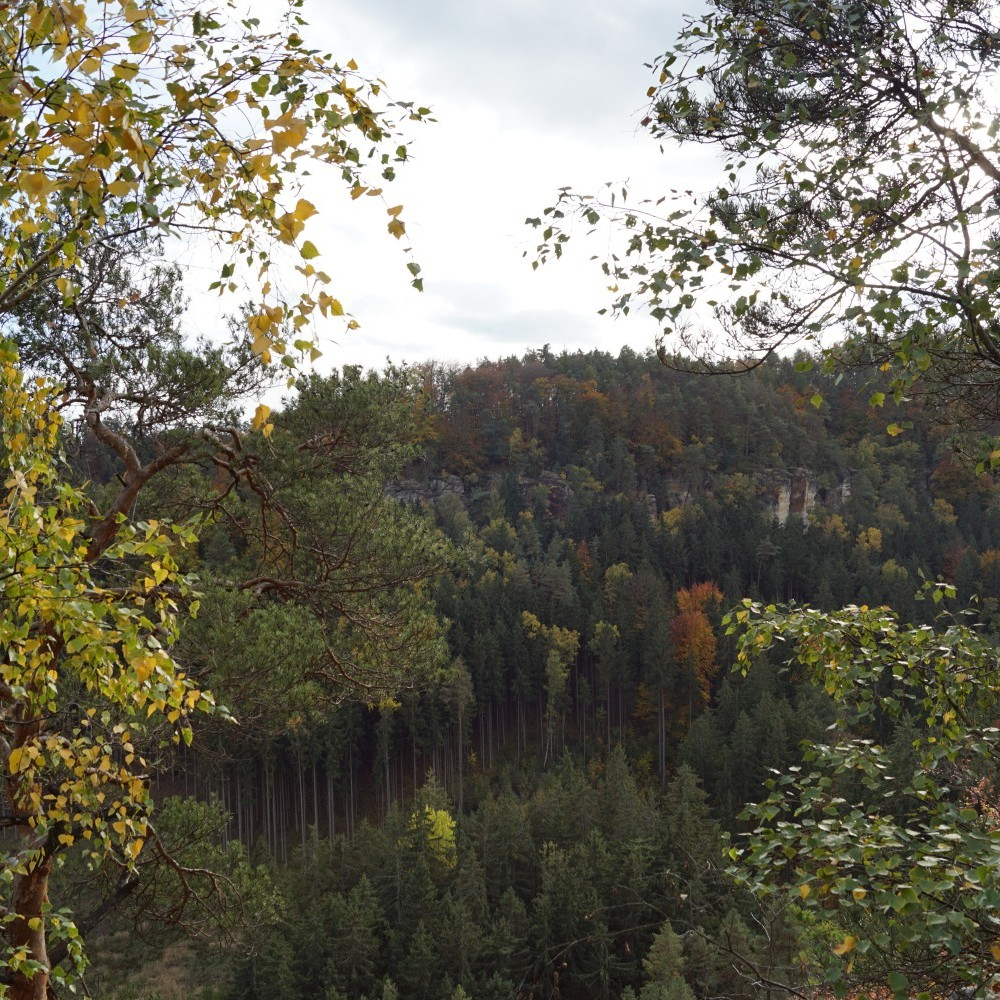
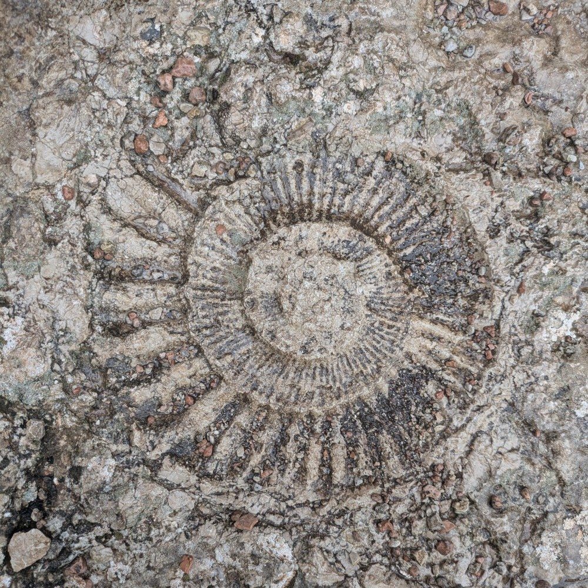
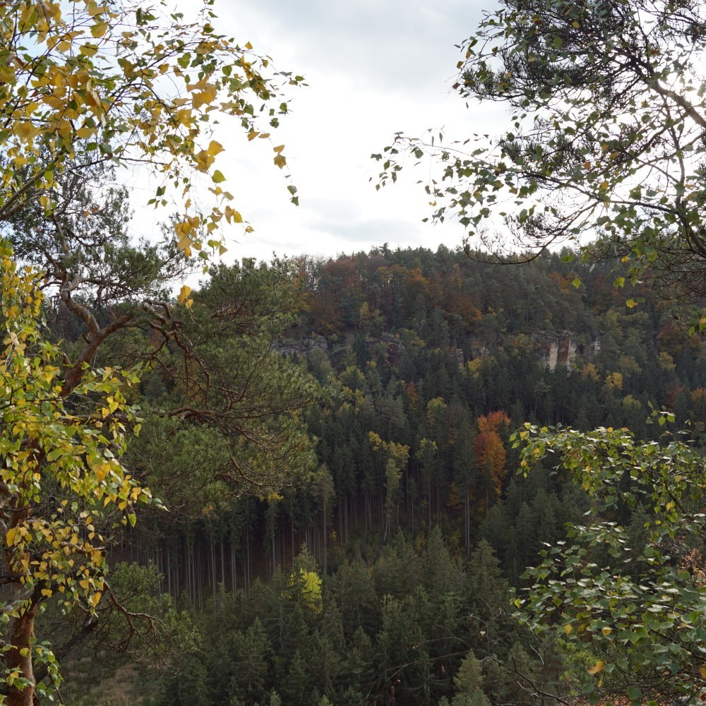

Welkom op de pagina waar ik een paar van mijn foto's laat zien. De foto's die hier staan zijn in een veel lagere kwaliteit dan het origineel. Als je een kopie wilt van de originele foto's kun je mij een mail sturen met een reden waarom je dat wilt.


 


